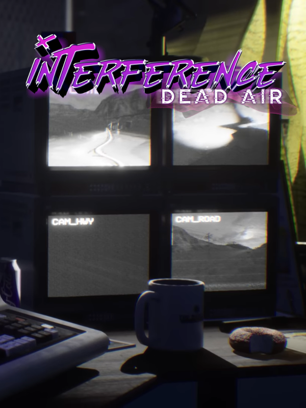

Interference: Dead Air
Interference: Dead Air
Details
|  | |
| Playtime | 2h 59m 0s |
| Last Activity | 2023-02-04 0:47:51 |
| Added | 2023-08-11 0:29:07 |
| Modified | 2025-10-02 10:35:01 |
| Completion Status | Completed |
| Library | Steam |
| Source | Steam |
| Platform | PC (Windows) |
| Release Date | 2023-02-02 |
| Community Score | |
| Critic Score | |
| User Score | |
| Genre | Adventure Indie Simulator |
| Developer | V Publishing |
| Publisher | V Publishing |
| Feature | Single Player |
| Links | Steam Twitch Official Website YouTube Discord |
| Tag | 1980s Choices Matter Dark Humor First-Person Horror Immersive Sim Indie Interactive Fiction Investigation Multiple Endings Mystery Psychological Psychological Horror Sci-fi Simulation Singleplayer Soundtrack Story Rich Supernatural Thriller |
Description
It was an easy job. Terrible pay, but it was just you, the graveyard shift and your little security booth out in the middle of nowhere. You were planning on catching up on some bad horror movies on tonight’s shift, before reality became stranger and deadlier than anything on VHS.
The facility is overrun, enemies stalk the halls and the science team are in danger. Steer the story through fully voice-acted, branching dialogues. Get on the radio to provide support and direct survivors to safety, reroute power through the facility remotely and track the movement of scientists and threats.
Armed with nothing but your wits, a pin-board map of the facility, your two-way radio, an archaic computer and anything else you can find lying around in the booth, only you can provide support and save your best friend trapped inside the facility. Or you can just switch off your radio, put on a movie and tune out while the world burns. Just pay no attention to the explosions on the horizon.


The facility is overrun, enemies stalk the halls and the science team are in danger. Steer the story through fully voice-acted, branching dialogues. Get on the radio to provide support and direct survivors to safety, reroute power through the facility remotely and track the movement of scientists and threats.
Armed with nothing but your wits, a pin-board map of the facility, your two-way radio, an archaic computer and anything else you can find lying around in the booth, only you can provide support and save your best friend trapped inside the facility. Or you can just switch off your radio, put on a movie and tune out while the world burns. Just pay no attention to the explosions on the horizon.
Be Resourceful:
Just because you’re out of the line of fire doesn’t mean you can take it easy. Juggle radio conversations, tracking dangers on your map board and rerouting power through the facility. So long as the power stays on, you’re still in the fight.Goof off:
Saving the day is overrated. You and the other security guards have stocked the booth to bursting with distractions and snacks. Put on a movie, heat up some microwaved goodies and chill. Who needs friends anyway?A Soundtrack To Die For:
Tune into a collection of 80s-inspired synth jams on your FM radio when the stress gets too much for you. Just try not to relax too much.Through The Loop:
A branching story designed to be played time and time again. Experiment, explore and discover multiple endings with dozens of variations.